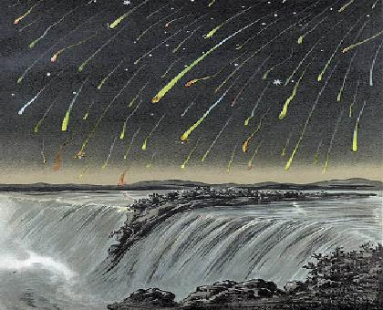
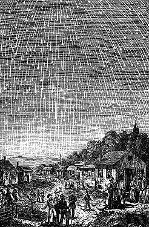
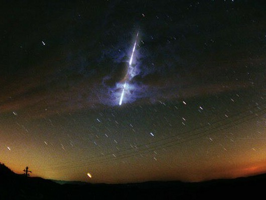

ASTR 130 (O'Connell)
THE LEONID METEOR SHOWER
November 2002

Leonid Shower Over Niagara Falls, 1833
INTRODUCTION
Meteors are the incandescent trails of tiny pieces of rocky or
icy debris burning up at high altitudes in the Earth's atmosphere. Up
to about 10 per hour can be seen on dark nights at any time of the
year. Debris left behind by comets can produce concentrated meteor
showers with much higher rates, up to 1000's of meteors per hour
in rare instances.
The Leonid Shower, occurring in mid-November, has historically been one
of the most spectacular meteor showers. The Leonids have been very
good over the past 4 years, and an unusually strong shower is expected
for East-Coast observers on the morning of November 19 this year.
For background on the shower, how astronomers predict the intensity,
and how to observe meteors, see the following web sites:
ASTRONOMY DEPARTMENT SHOWER EVENT
(MORNING OF TUESDAY, NOV. 19)
The Astronomy Department will hold a special Leonid observing session
(assuming good weather) as announced below. All 130 students are
invited. You can do the Meteor Shower Lab (#9) there if you wish, or
on your own you can take advantage of the darker skies outside
Charlottesville. Parking areas on the Blue Ridge Parkway are good
sites if they have an unobstructed view of the eastern horizon.

On the morning of November 19, residents of the Mid-Atlantic States,
including all of Virginia, will have the opportunity to view the
spectacular Leonid Meteor Shower. This shower has produced fantastic
displays in the past, including the 2001 Leonid meteor shower when
over 2,000 meteors per hour were reported in Virginia.
The shower will peak around 5:30 a.m. Eastern Standard Time on
Tuesday, November 19, 2002 as the earth passes through the trail of
debris left by Comet Temple-Tuttle in 1866. Given the uncertainty in
predicting the precise time of the peak, it is advisable to begin
watching at least one hour early. Astronomers are predicting between
2,500 and 10,000 meteors per hour, however, a nearly full moon will
make some of the fainter meteors hard to see. To view the shower, lie
on the ground or in a recliner and look straight overhead. A sleeping
bag will help keep observers warm.
The Astronomy Department at the University of Virginia will be hosting
a viewing event in the Klockner Stadium stands on the morning of the
19th. The event will run from 4:00 a.m. until twilight.
There is
ample parking in the University Hall lots. Visitors should bring a
flashlight, blankets or a sleeping bag. Astronomers will be present
to describe the shower, talk about its history, and point out the
constellations. There is no charge for the event. The public is
welcome to attend the event, though most people should be able to see
the shower from their own backyard.
For more information about the Leonid Meteor Shower and the Astronomy
Department viewing event, call the UVa Astronomy Department at 924-7494.

Leonid Fireball Captured in a 10-minute Exposure
Last modified
November 2002 by rwo